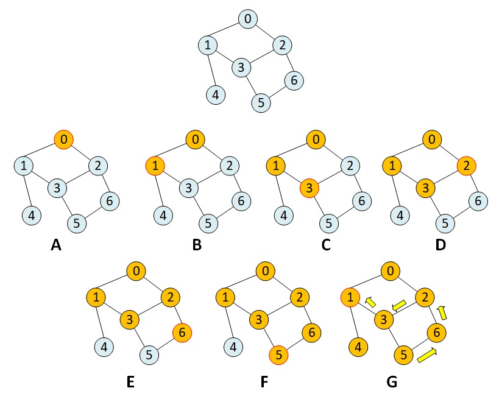

图论算法笔记|02深度优先遍历
1. 遍历的意义
图是一种数据结构，数据结构的作用就是用来将数据进行结构化的存储。然而存储的目的为的是后续高效率的查找。查找这个动作就是需要在数据结构里面进行遍历，所以从这个角度上来看任何的数据结构都应该存在遍历的方式。
对于“图”这种数据结构来说，它可以有深度优先遍历和广度优先遍历两种方式。
2. 深度优先遍历
深度优先遍历就是从一个节点出发，然后遍历它相连的“一个”节点A，然后从遍历节点A向量的“一个”节点B，然后遍历节点B相连的“一个”节点C，一直进行下去，直到后续没有节点可以遍历，然后再回到上一个节点。（要特别注意上面说的“一个”）
上面的这段解释看起来比较绕，稍后我们用一个例子来解释。从上面的描述可以感觉到这是一种典型的递归的遍历方式。访问节点，不断的压栈，然后没有可以访问的之后就弹栈！
下图是一个深度优先遍历的例子：

A: 首先从节点0出发，遍历节点0；
B：遍历节点0相连的节点1；
C: 遍历节点1相连的节点3；
D：遍历节点3相连的节点2；
E: 遍历节点2相连的节点6；
F: 遍历节点6向量的节点5；
此时节点5相连的已经没有未访问的节点了，所以要回到节点6。 节点6也没有未访问的节点了，所以回到节点2， 节点2也没有未访问的节点了，所以回到节点3， 节点3也没有未访问的节点了，所以回到节点1。
G: 遍历节点1相连的节点4；
此时节点4相连的已经没有未访问的节点了，所以要回到节点1。 节点1也没有未访问的节点了，所以回到节点0 完成遍历。
3. 代码实现
//GraphDFS.h
class GraphDFS
{
public:
GraphDFS(Graph& g):g(g){}
~GraphDFS(){}
void printLine();
void RecurtionDFS();
void NoRecurtionDFS();
private:
std::vector<int> res;
Graph& g;
std::vector<bool> visited;
void recurtionDfs(int id);
void norecurtionDfs(int id);
};
//GraphDFS.cpp
#include "GraphDFS.h"
#include <stack>
void GraphDFS::RecurtionDFS()
{
visited = std::vector<bool>(g.m_nV, false);
for (size_t i = 0; i < g.m_nV; i++){
if (!visited[i]){
recurtionDfs(visited[i]);
}
}
}
void GraphDFS::recurtionDfs(int id)
{
visited[id] = true;
res.push_back(id);
for (auto i : g.adj(id)){
if (!visited[i]){
recurtionDfs(i);
}
}
}
void GraphDFS::NoRecurtionDFS()
{
visited = std::vector<bool>(g.m_nV, false);
res.clear();
for (size_t i = 0; i < g.m_nV; i++){
if (!visited[i]){
norecurtionDfs(visited[i]);
}
}
}
void GraphDFS::norecurtionDfs(int id)
{
std::stack<int> sk;
sk.push(id);
visited[id] = true;
while (!sk.empty()){
int cur = sk.top();
sk.pop();
res.push_back(cur);
for (auto i : g.adj(cur)){
if (!visited[i]){
sk.push(i);
visited[i] = true;
}
}
}
}
void GraphDFS::printLine()
{
std::cout << "DFS res: " << std::endl;
for (auto i : res)
std::cout << i << " ";
std::cout << std::endl;
}
4. 深度优先遍历的应用
4.1 无向图的联通分量
联通分量指的是图中有几个独立的部分。这个问题记得在17年百度校招的笔试题里面遇到过，原意是说有一个二维数组，代表一个地图，里面有几个岛，计算岛的个数。本质上就是联通分量的个数。
void dfs(int id)
{
visited[id] = true;
for (auto i : g.adj(id)) {
if (!visited[i]) {
dfs(i);
}
}
}
int CC::getCount()
{
int cc = 0;
visited = std::vector<bool>(g.m_nV, false);
for (size_t i = 0; i < g.m_nV; i++){
if (!visited[i]){
dfs(i);
cc++;
}
}
return cc;
}
上述的代码中只是在dfs的基础上添加了一个cc变量，用来记录当前已经遍历了的分量。那如果我们想知道一个顶点是属于哪一个联通分量的我们应该怎么做呢？我们可以添加一个数组用来记录每个顶点属于的联通分量id。但是这样做就增加了额外的空间，我们可以考虑将我们的id记录在visited数组中。
void dfs(int id, int cc)
{
visited[id] = cc;
for (auto i : g.adj(id)) {
if (visited[i] == -1) {
dfs(i, cc);
}
}
}
int CC::getCount()
{
int cc = 0;
// -1表示节点没有被访问，非-1表示节点已经访问，数值表示该节点属于的联通分量id
visited = std::vector<int>(g.m_nV, -1);
for (size_t i = 0; i < g.m_nV; i++)
{
if (visited[i] == -1)
{
dfs(i, cc);
cc++;
}
}
return cc;
}
OK，有了上面的代码，我们就可以很快的求解两个点是否是相连的，因为如果两个点相连的话那么他们肯定是属于同一个联通分量的。上面代码中的visited表示了两重的语义，一个是表示节点是否被访问过，另一个就是已经访问过的节点它属于哪一个联通分量。
bool isConnect(int v1, int v2)
{
//先调用getCount, 获取到联通分量的记录数组visited. 然后判断他们是否属于同一个联通分量即可
return visited[v1] == visited[v2];
}
4.2 路径问题
上面我们解决了节点之前是否联通的问题，如果两个节点联通，那么他们之间的路径是什么样的呢？我们同样可以使用深度优先遍历的方式来进行解决。 我们可以创建一个数组，记录我们遍历到该节点时，是从哪一个节点来到它的，这样我们就可以从终点出发，逆向推导得到路径。
#include <algorithm>
class SingleSourcePath
{
public:
SingleSourcePath(Graph &g, int s) :g(g){
pre = std::vector<int>(g.m_nV, -1);
srcV = s;
dfs(s, s);
}
~SingleSourcePath() {};
std::vector<int> path(int dst)
{
std::vector<int> res;
int cur = dst;
assert(pre[cur] != -1) // 不是联通的，没有路径
while (cur != srcV){
res.push_back(cur);
cur = pre[cur];
}
res.push_back(cur);
std::reverse(res.begin(), res.end());
return res;
}
private:
Graph& g;
int srcV;
std::vector<int> pre;
void dfs(int id, int p){
pre[id] = p;
for (auto i : g.adj(id)) {
if (pre[i] == -1) {
dfs(i, id);
}
}
}
};
4.3 检测无向图中的环
想要检测无向图中是否有环, 首先我们需要了解一下环的特性: 到达一个节点v, 如果和它相连的节点w已经被访问过, 而且v的上一个节点不是w, 那么就存在环。
class CycleDetection
{
public:
CycleDetection(Graph &g) : g(g) {
visited = std::vector<bool>(g.m_nV, false);
bHasCycle = false;
for (size_t v = 0; v < g.m_nV; ++v){
if (visited[v] == false && dfs(v, v)){
bHasCycle = true;
break;
}
}
}
bool hasCycle(){
return bHasCycle;
}
private:
Graph &g;
std::vector<bool> visited;
bool bHasCycle;
bool dfs(int v, int parent) {
visited[v] = true;
for (auto w : g.adj(v)) {
if (visited[w] == false) {
if (dfs(w, v)) {
return true;
}
}
else if (parent != w) { //节点i被遍历过，且当前节点的上一个节点不是i, 说明有一个环
return true;
}
}
return false;
}
};
4.4 二分图检测
二分图是指可以将图中的节点分成两个部分，同一个部分中的任何两个节点之间不存在边。二分图检测可以使用染色的方法来进行求解，从节点s开始我们先将它染色成白色(0), 然后从s开始进行dfs, 遍历到下一个节点时染色成黑色(1), 也就是说遍历的过程中将相邻的顶点染色成不同的颜色，如果在遍历的过程中发现无法使得所有顶点满足：相邻的顶点染色成不同的颜色这个特性，那么就说明这个图不是一个二分图。所以这里我们需要记录的信息就是每个节点的颜色。
class BipartitionDetection
{
public:
BipartitionDetection(Graph &g) : g(g) {
visited = std::vector<bool>(g.m_nV, false);
colors = std::vector<int>(g.m_nV, -1);
isBipartite = true;
for (size_t v = 0; v < g.m_nV; ++v) {
if (visited[v] == false){
dfs(v, 0);
if (!dfs(v, 0)) {
isBipartite = false;
break;
}
}
}
}
private:
std::vector<int> res;
Graph& g;
std::vector<bool> visited;
std::vector<int> colors;
bool isBipartite;
bool dfs(int v, int color) {
visited[v] = true;
colors[v] = color;
for (auto w : g.adj(v)) {
if (visited[w] == false) {
if (dfs(w, 1 - color) == false) {
return false;
}
}
else if (color == colors[w]) {
return false;
}
}
return true;
}
};
- 原文作者：Binean
- 原文链接：https://bzhou830.github.io/posts/20170102%E5%9B%BE%E8%AE%BA%E7%AE%97%E6%B3%9502/
- 版权声明：本作品采用知识共享署名-非商业性使用-禁止演绎 4.0 国际许可协议进行许可，非商业转载请注明出处（作者，原文链接），商业转载请联系作者获得授权。